10 Assignment:
10.1 Question 1
Extract the meteorological data URLs. Here we want you to use the rvest package to get the URLs for the SASP forcing and SBSP_forcing meteorological datasets.
#use the rvest package to scrape the url
site_url <- "https://snowstudies.org/archived-data/"
webpage <- read_html(site_url)
#find weblinks and extract the urls
links <- webpage %>%
html_nodes("a") %>% # <a> tag defines a hyperlink
html_attr("href") %>% # href is the URL the link goes to
.[grepl(".txt", .)] %>% # only pull txt files
.[grepl("SASP_Forcing|SBSP_Forcing", .)] # could also use just "_Forcing" but question specifically asks for only SASP and SBSP (in case site is updated later to include a new _Forcing file)10.2 Question 2
Download the meteorological data. Use the download_file and str_split_fixed commands to download the data and save it in your data folder. You can use a for loop or a map function.
10.3 Question 3
Write a custom function to read in the data and append a site column to the data.
# this code grabs the variable names from the metadata pdf file
headers <- pdf_text('https://snowstudies.org/wp-content/uploads/2022/02/Serially-Complete-Metadata-text08.pdf') %>%
readr::read_lines(.) %>%
trimws(.) %>%
str_split_fixed(.,'\\.',2) %>%
.[,2] %>%
.[1:26] %>%
str_trim(side = "left") %>%
make.names(unique = FALSE, allow_ = TRUE)
# create function to read data
my_data_reader <- function(file){
# extract name of file
fname <- substr(file, str_locate(file, "SBB_")[2]+1, str_locate(file, "SBB_")[2]+4)
# read in data
df <- read_table(file
, skip = 4
, col_names = headers
, skip_empty_rows = TRUE
, na = c("-9999.000", "")
) %>%
select("year", "month", "day", "hour", "air.temp..K.", "precip..kg.m.2.s.1.") %>%
mutate(site = fname)
return(df)
}10.4 Question 4
Use the map function to read in both meteorological files. Display a summary of your tibble.
# read in data using function created above
metoc_hourly_full <- map_dfr(file_names, my_data_reader)
# show data summary
summary(metoc_hourly_full)## year month day hour
## Min. :2003 Min. : 1.000 Min. : 1.00 Min. : 0.00
## 1st Qu.:2005 1st Qu.: 3.000 1st Qu.: 8.00 1st Qu.: 5.75
## Median :2007 Median : 6.000 Median :16.00 Median :11.50
## Mean :2007 Mean : 6.472 Mean :15.76 Mean :11.50
## 3rd Qu.:2009 3rd Qu.: 9.000 3rd Qu.:23.00 3rd Qu.:17.25
## Max. :2011 Max. :12.000 Max. :31.00 Max. :23.00
## air.temp..K. precip..kg.m.2.s.1. site
## Min. :242.1 Min. :0.000e+00 Length:138336
## 1st Qu.:265.8 1st Qu.:0.000e+00 Class :character
## Median :272.6 Median :0.000e+00 Mode :character
## Mean :272.6 Mean :3.838e-05
## 3rd Qu.:279.7 3rd Qu.:0.000e+00
## Max. :295.8 Max. :6.111e-0310.5 Question 5
Make a line plot of mean temp by year by site (using the air temp [K] variable). Is there anything suspicious in the plot? Adjust your filtering if needed.
This initial plot of mean hourly temperature by year shows a much lower average temperature for both sites in the first year of the data (2003).
# summarize mean temp by year, site
metoc_site_year <- metoc_hourly_full %>%
group_by(site, year) %>%
summarise(mean_temp = mean(air.temp..K., na.rm = TRUE)
, cnt = n()) %>%
arrange(site, year)
# function to create line graph of temp by year for each site
my_line_graph <- function(my_data){
print(
ggplot(my_data, aes(x = year, y = mean_temp, color = site)) +
geom_line(alpha=0.8, size = 1.3) +
geom_point(alpha=0.8, size = 1.3) +
scale_x_continuous(limits = c(min(metoc_hourly_full$year), max(metoc_hourly_full$year)), breaks = seq(1900, 2200, by = 1)) +
labs(
title = "Average Temperature by Year"
, subtitle = "Swamp Angel Study Plot and Senator Beck Study Plot"
) +
ylab("Mean Temp. (K)") +
xlab("") +
scale_color_brewer(palette = "Dark2") +
theme_bw() +
theme(
legend.position="bottom"
, legend.box = "horizontal"
, axis.text.x = element_text(size = 11)
)
)
}
# plot with full data
my_line_graph(metoc_site_year)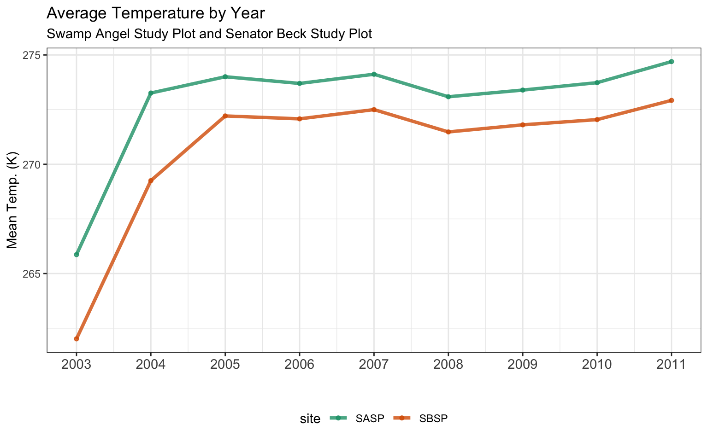
Looking at a count of the records by year reveals that the first and last year of the data do not include a full year of data. As this is hourly data, a full year of data should have 365*24 = 8,760 records (8,784 records on leap year).
# investigate what is happening in 2003 by looking at record counts
ggplot(metoc_site_year, aes(x= as.character(year), y=cnt, fill = site)) +
geom_col(alpha=0.8, width = 0.7) +
geom_text(aes(label = scales::comma(cnt)), colour = "black", angle = 90, hjust="top") +
facet_grid(. ~ site) +
scale_y_continuous(labels = label_comma()) +
labs(
title = "Number of hourly records by year"
, subtitle = "Swamp Angel Study Plot and Senator Beck Study Plot"
) +
ylab("Count Obs.") +
xlab("") +
scale_fill_brewer(palette = "Dark2") +
theme_bw() +
theme(
legend.position="none"
, axis.text.x = element_text(size = 11, angle = 90, vjust=0.2)
)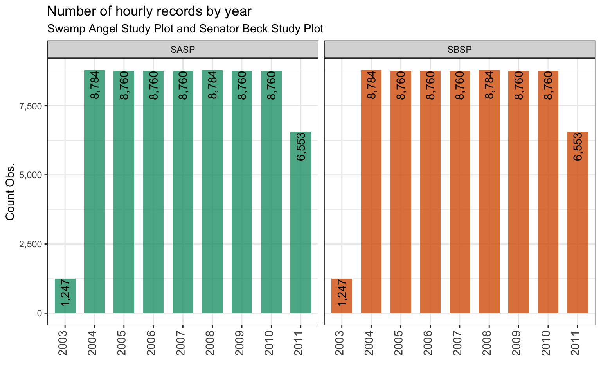
We can filter out yearly records that have incomplete data and plot the average hourly temperature by year again.
# line graph of temp by year for each site filtered for complete data
my_line_graph(metoc_site_year %>% filter(cnt >= 8760))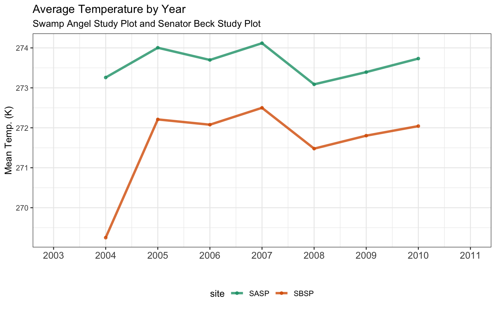
10.6 Question 6
Write a function that makes line plots of monthly average temperature at each site for a given year. Use a for loop to make these plots for 2005 to 2010. Are monthly average temperatures at the Senator Beck Study Plot ever warmer than the Snow Angel Study Plot? Hint: https://ggplot2.tidyverse.org/reference/print.ggplot.html
# summarize mean temp by year, month, site
metoc_site_year_mo <- metoc_hourly_full %>%
group_by(site, year, month) %>%
summarise(mean_temp = mean(air.temp..K., na.rm = TRUE)
, cnt = n()) %>%
arrange(site, year, month)
# function to create line graph of temp by year for each site
my_line_graph_month <- function(my_data, my_year){
#generate title
my_title <- paste0(as.character(my_year), " Average Temperature by Month")
#plot
(
ggplot(my_data %>% filter(year==my_year), aes(x = (month), y = mean_temp, color = site)) +
geom_line(alpha=0.8, size = 1.3) +
geom_point(alpha=0.8, size = 1.3) +
scale_x_discrete(limits=month.abb) +
labs(
title = my_title
, subtitle = "Swamp Angel Study Plot and Senator Beck Study Plot"
) +
ylab("Mean Temp. (K)") +
xlab("") +
scale_color_brewer(palette = "Dark2") +
theme_bw() +
theme(
legend.position="bottom"
, legend.box = "horizontal"
, axis.text.x = element_text(size = 11)
)
)
}
# plot with loop to create a plot for each year
my_years <- c(2005:2010)
for (i in 1:length(my_years)) {
print( my_line_graph_month(metoc_site_year_mo, my_years[i]) )
}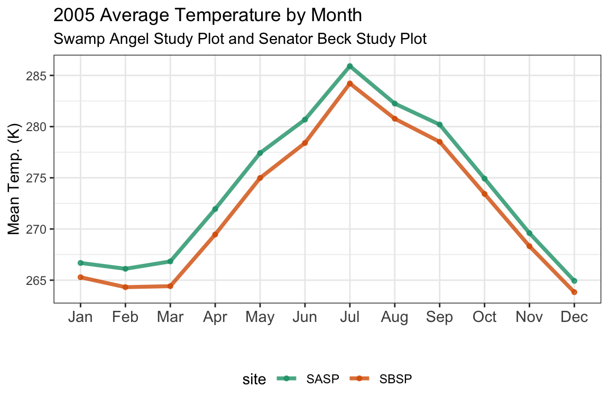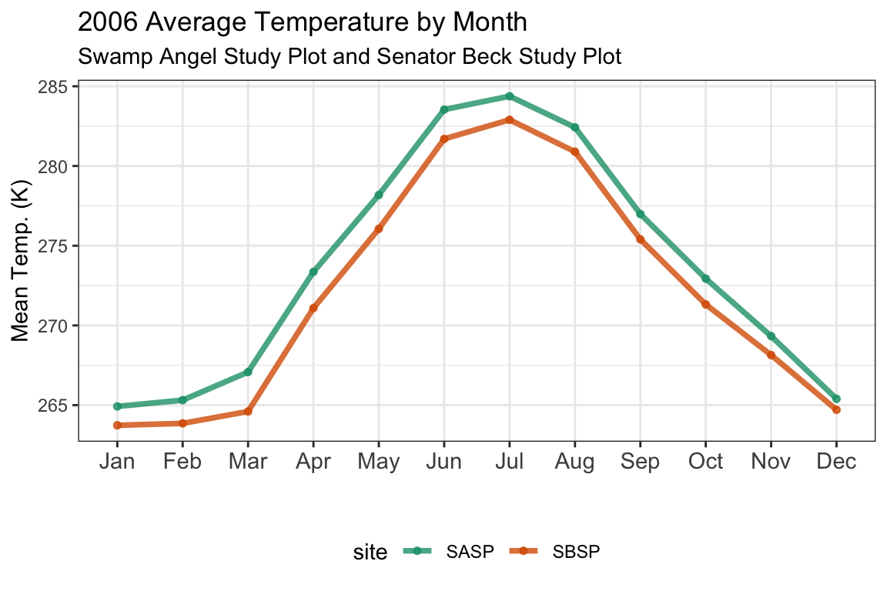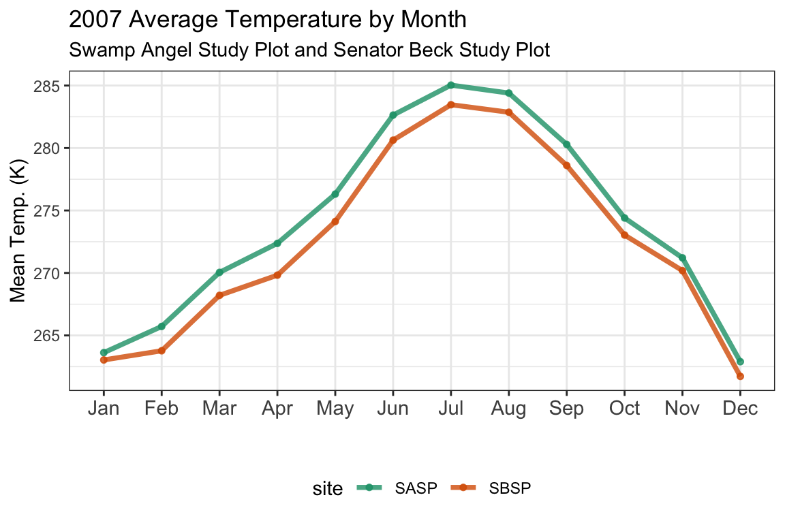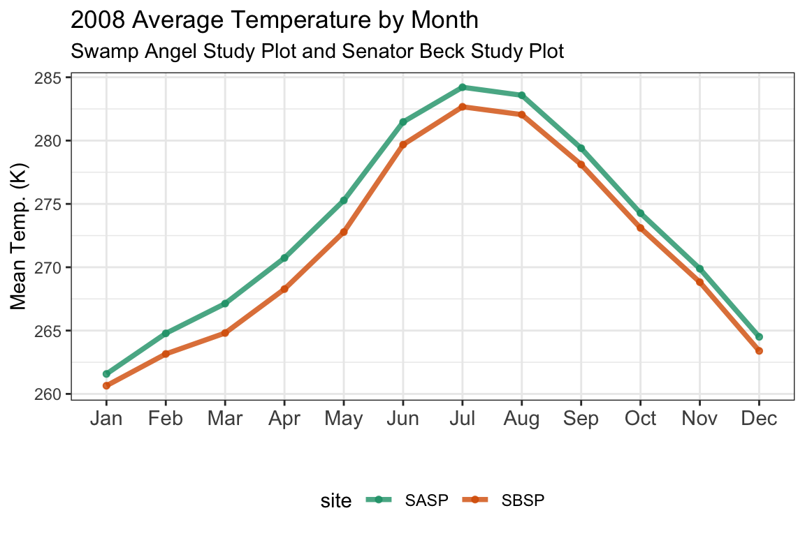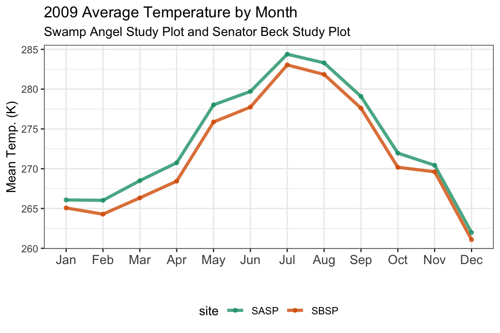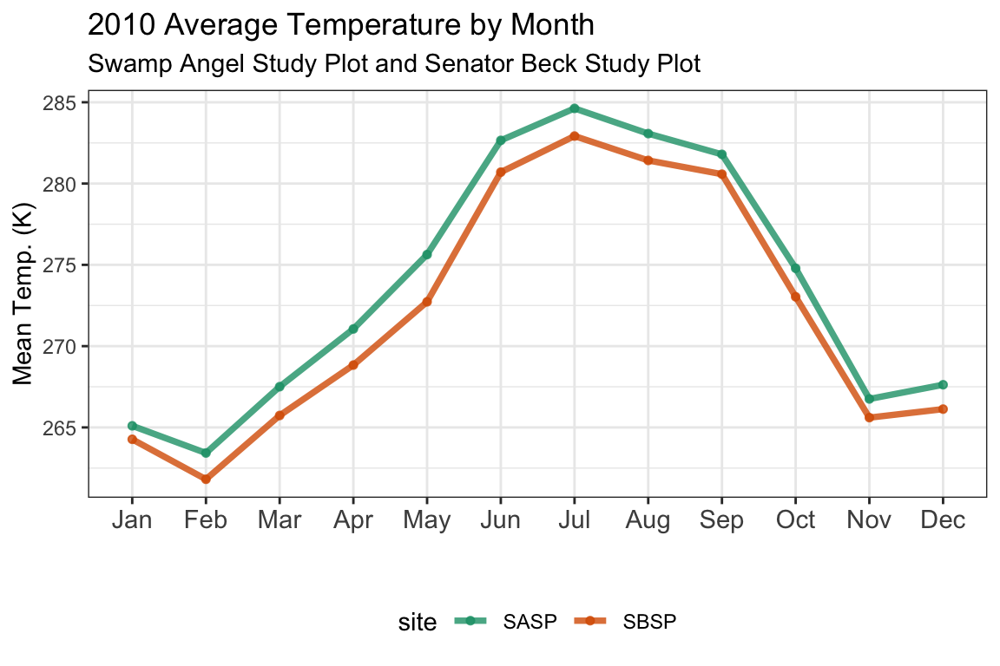
10.6.1 A better way?
Producing an individual chart for each year of interest can also be accomplished by using the facet_grid option in ggplot. With this option there is no need to write a loop to produce an individual graph for each year.
#plot each year using facet_grid
ggplot(metoc_site_year_mo %>% filter(year %in% my_years), aes(x = (month), y = mean_temp, color = site)) +
geom_line(alpha=0.8, size = 0.9) +
geom_point(alpha=0.8, size = 0.9) +
facet_grid(. ~ year) +
scale_x_discrete(limits=month.abb) +
labs(
title = "2005-2010 Average Temperature by Month"
, subtitle = "Swamp Angel Study Plot and Senator Beck Study Plot"
) +
ylab("Mean Temp. (K)") +
xlab("") +
scale_color_brewer(palette = "Dark2") +
theme_bw() +
theme(
legend.position="bottom"
, legend.box = "horizontal"
, axis.text.x = element_text(size = 7, angle = 90)
)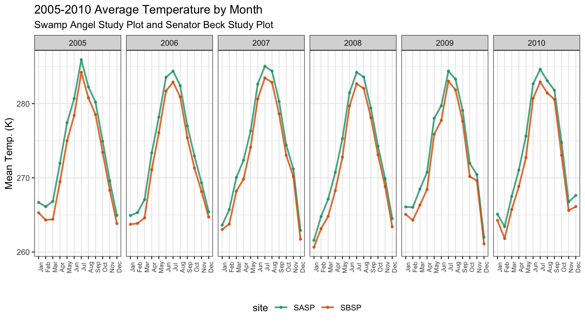
10.7 Bonus Question 1
Make a plot of average daily precipitation by day of year (averaged across all available years). Color each site.
# summarize total precipitation by date, site
metoc_doy_site <- metoc_hourly_full %>%
mutate(date_id = make_date(year, month, day)
, day_of_year = yday(date_id)
) %>%
group_by(site, date_id, day_of_year) %>%
summarise(tot_precip = sum(precip..kg.m.2.s.1.)) %>%
group_by(site, day_of_year) %>% # now take the avg of total daily precip by doy
summarise(mean_daily_precip = mean(tot_precip, na.rm = TRUE)) %>%
arrange(site, day_of_year) %>%
mutate(month_day = as.Date(day_of_year, origin = "1999-12-31")) # this date will make for plotting with date label
# note to choose a leap year above to handle years with 366 days
# plot mean precip by doy
ggplot(metoc_doy_site, aes(x = month_day, y = mean_daily_precip, color = site)) +
geom_line(alpha=0.5, size = 0.5) +
geom_point(alpha=0.5, size = 0.4) +
geom_smooth(method = loess, se = FALSE, alpha=1, size = 0.9) +
facet_grid(. ~ site) +
scale_x_date(date_labels = "%b-%d", date_minor_breaks = "1 month") +
labs(
title = "Average Precipitation by Day of Year"
, subtitle = "Swamp Angel Study Plot and Senator Beck Study Plot"
) +
ylab("Mean Precip. (kg/m2/s)") +
xlab("") +
scale_color_brewer(palette = "Dark2") +
theme_bw() +
theme(
legend.position="none"
, axis.text.x = element_text(size = 11, angle = 90)
)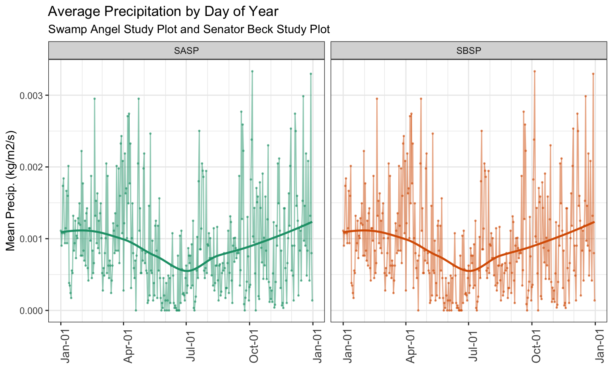
10.8 Bonus Question 2
Use a function and for loop to create yearly plots of precipitation by day of year. Color each site.
Personally, I prefer using facet_grid to make small multiples instead of creating an independent graph for each year.
# summarize total precipitation by date, site
metoc_hourly_full %>%
filter(year %in% c(2004:2010)) %>%
mutate(date_id = make_date(year, month, day)
, day_of_year = yday(date_id)
) %>%
group_by(site, day_of_year, year) %>%
summarise(tot_precip = sum(precip..kg.m.2.s.1.)) %>%
arrange(site, year, day_of_year) %>%
mutate(month_day = as.Date(day_of_year, origin = "1999-12-31")) %>% # this date will make for plotting with date label
# plot mean precip by doy
ggplot(., aes(x = month_day, y = tot_precip, color = site)) +
geom_line(alpha=0.5, size = 0.5) +
geom_smooth(method = loess, span = 0.2, se = FALSE, alpha=1, size = 0.9) +
facet_grid(year ~ site, scales = "free_y") +
scale_x_date(date_labels = "%b-%d", date_minor_breaks = "1 month") +
labs(
title = "Precipitation by Day of Year"
, subtitle = "Swamp Angel Study Plot and Senator Beck Study Plot"
) +
ylab("Tot. Precip. (kg/m2/s)") +
xlab("") +
scale_color_brewer(palette = "Dark2") +
theme_bw() +
theme(
legend.position="none"
, axis.text.y = element_text(size = 6)
, axis.text.x = element_text(angle = 90)
)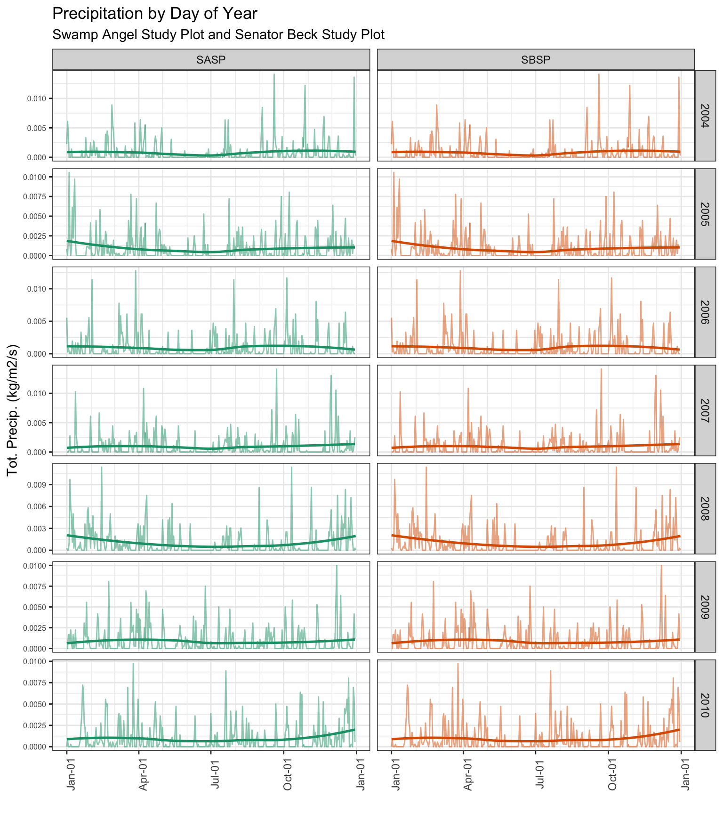